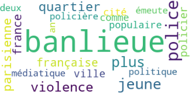

Résultat 4 : Français
Le nuage de mots ci-dessous présente les contextes du mot "banlieue" dans le corpus français. Il nous permet de saisir l’emploi assez géographique du terme ("France", "ville", "parisienne"), mais surtout l’émergence d’autres mots relatifs à la police, à la violence, à la jeunesse et aux médias.

Si on s’intéresse plus précisément aux cooccurrents du mot "banlieue", on obtient le graphe suivant sur iTrameur.
Paramètres : FQMax = 10, Co-Freq = 4, IndSPMin = 9, 8 termes à gauche et à droite
On retrouve la sémantique géographique de "banlieue" dans les termes "française" et surtout "parisienne", qui sont particulièrement cooccurrents du mot choisi. Néanmoins, "banlieue" apparaît en coocurrence du verbe "opprime" ou du mot "incidents", ainsi que des adjectif "médiatique", "populaire" et du mot ou adjectif "jeunes", ce qui semble révéler une autre représentation charriée par le mot choisi, moins dans son ancrage territorial que dans les caractéristiques de ceux qui y vivent ("jeunes", "populaires") et de ce qui s’y déroule ("incidents", "opprime"), ainsi que de la dimension médiatique du phénomène. Le champ sémantique de la police n’apparaît pas ici (du moins, on ne sait pas à quoi "opprime" se rapporte), ce qui semble signifier qu’il n’apparaît pas en cooccurrence avec "banlieue" dans le corpus.
Pour mieux comprendre la connotation du mot "banlieue" dans notre corpus, on s’intéresse au réseau de cooccurrences.
Paramètres : FQMax = 10, Co-Freq = 6, IndSPMin = 10, 15 termes à gauche et à droite
Le réseau de cooccurrence permet de visualiser un lien entre la banlieue française ou parisienne, associées aux jeunes, et la question de la couverture médiatique en rapport avec la police française et les forces de l’ordre. Dans le corpus, on observe les cooccurrences qui forment des noms de lieux comme Seine-Saint-Denis ou Clichy-sous-Bois. On note aussi un usage de structures de type il faut croire/faire/arrêter qui semble expliquer en partie la distance mise entre les banlieues et la couverture médiatique associée au champ sémantique de la police. En effet, il est possible que l’usage de l’impersonnel permette de décrire avec une distance la couverture médiatique faite des banlieues, plutôt qu’une description des banlieues en tant que telles.
Ainsi, le corpus semble plutôt organisé autour de la question de la représentation des banlieues dans les médias, qui les associent à la banlieue parisienne en particulier et à l’action de la police. Cette distance du corpus vis-à-vis de l’objet "banlieue" explique notamment la présence de 89 dans les cooccurrents de "banlieue", qui fait référence à une association des années 80, banlieues 89. Le corpus français paraît donc particulièrement historique et il permet de cerner la centralité de la région parisienne, de la police et des médias dans la représentation de la banlieue en France.
Le contexte de 89, qui se rapporte à une association :